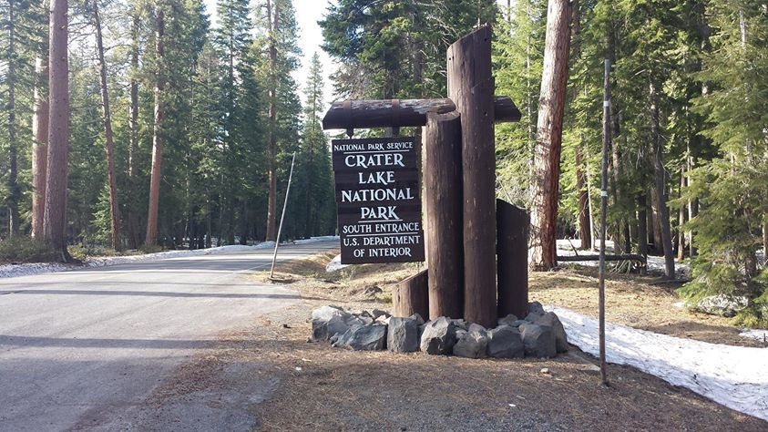
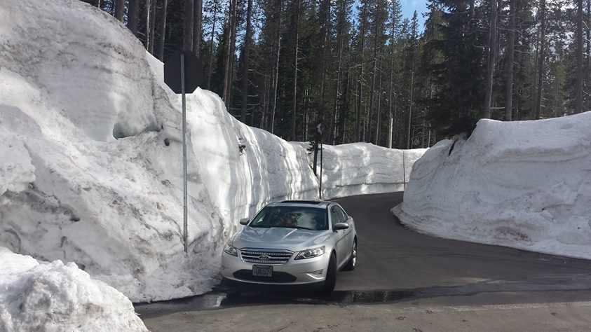
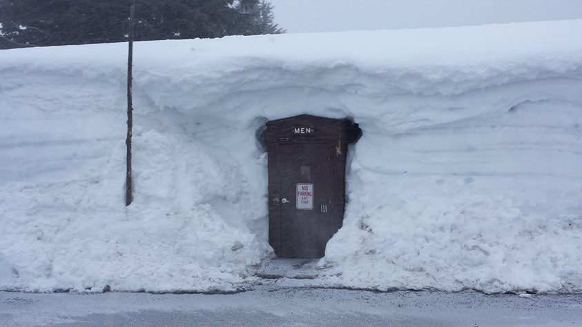
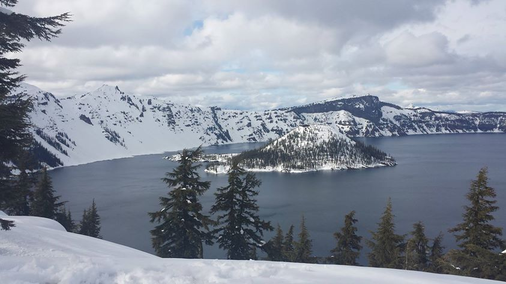
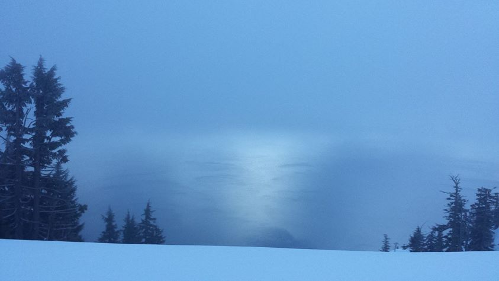

ope...a life / serial.7
Crater Lake is amazing. It's a volcanic crater whose rim sits at 8,000 feet. The caldera is 2,148 feet (about half a mile) deep and was formed when Mount Mazama collapsed. No rivers flow in or out of the lake. The lake itself is 1,949 feet deep which makes it the deepest lake in the U.S.. There is a thirty foot tall tree stump that has bobbed vertically in the lake for over a center whose name is The Old Man of the Lake.

Just a single patch of snow on the ground when entering the park.

After about ten minutes of driving the snow on the side of the road was piled twelve feet high.

The men's bathroom with snow piled up six feet over its roof.

Clear day's view of Wizard Island. This picture was taken from on top of Rim Village whose structures were buried completely beneath the snow. We were walking a couple feet *on top of* the buildings.

The next morning the fog and mist turned everything blue and there was no Wizard Island to be seen.